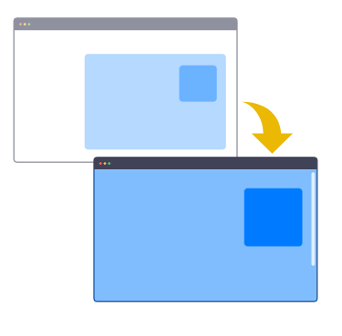
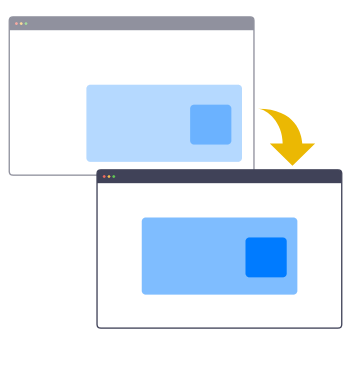
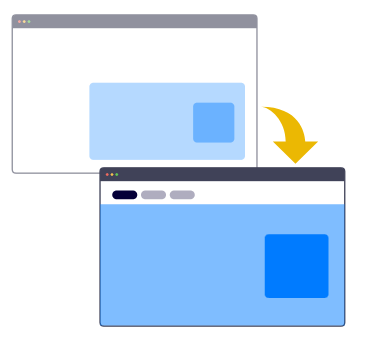
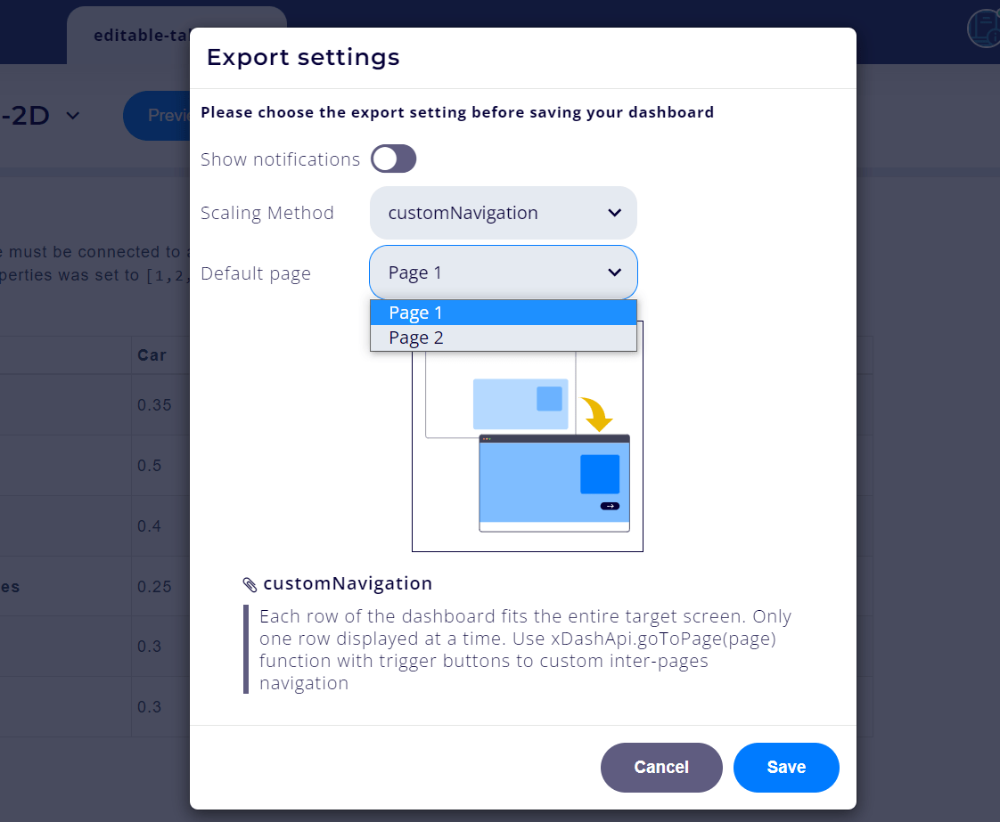

Application export, deployment and sharing¶
An Chalk'it project may be:
- previewed in full-page view
- exported to a standalone html page on the local disk
These features are available in the dashboard view mode:
As dashboard edition zone is smaller than the full window, Chalk'it provides several scaling methods, available under the settings menu shown below:
Available export settings depend on the responsive layout configuration defined in the edit mode:
- If Row is set to none, the dashboard is unconstrained. Available scaing methods are adjustToFullWidth, ajustToTargetWindow and keepOriginalWidth
- If Row is set a a numeric value (1,2...), the dashboard in edition mode is organized according to this constrained layout. In the target dashboard, each row is projected to the target full page. Several pagination methods are available, including: projectToTargetWindow, rowToPage, rowToTab and customNavigation
Scaling methods for the unconstrained dashboard¶
adjustToFullWidth¶
- The dashboard is stretched widthwise to fit the width of the target screen.
- The height of the widgets is calculated so as to preserve their proportions (in pixels).
- User should use this method rather than the ajustToTargetWindow method if the widgets proportions must be preserved (in pixels), e.g. to avoid distortion of an image.
- Of course, a vertical overflow (with vertical scroll bar) is possible in this mode.

ajustToTargetWindow¶
- Similar to the adjustToFullWidth method, but the widgets proportions are not preserved.
- Dashboard viewport proportion, from the width and height dimensions, are preserved.
- This method is useful to keep the same dashboard content heightwise.
keepOriginalWidth¶
- Original viewport dimensions of the dashboard are preserved. Dashboard is centered.

Scaling methods for the constrained dashboard¶
projectToTargetWindow¶
- This method makes the whole dashboard fits the entire target screen.
- The original dashboard (in edition mode), seen with its scroll dimensions, is "projected" into the target screen.
- Target screen has no overflow (no scroll bars).
- Widgets proportions are not preserved.
- User should use this method when rows are defined in responsive layout, as each row will be projected into the target screen (for large target screens).
- For small target screens, each column will be projected into the target screen.
- This method is not suitable if the scroll height of the original dashboard is approximatively greater than 130 % of the original screen, when no row is used.

rowToPage¶
Each row of the dashboard fits the entire target screen. Only one row displayed at a time. A pagination system is included.
rowToTab¶
Each row of the dashboard fits the entire target screen. Only one row displayed at a time as a page tab.

Tab names have to be be defined in the Configuration of each row's name modal in the Dashboard aspect main tabset:
customNavigation¶
Custom navigation mode is the most flexible multi-page mode. For navigation between pages, user needs to use button widgets connected to a JavaScript Script datanode including navigation instructions:
xDashApi.goToPage(2);
return true;
Default start page needs also to be indicated:

Security considerations¶
When a HTML page is generated with Chalk'it, either exported, public or private, the xprjson content is inlined into the HTML page code, and might include sensitive information such as passwords, API keys, authorization information...
Safely handling secrets is currenly outside Chalk'it scope.